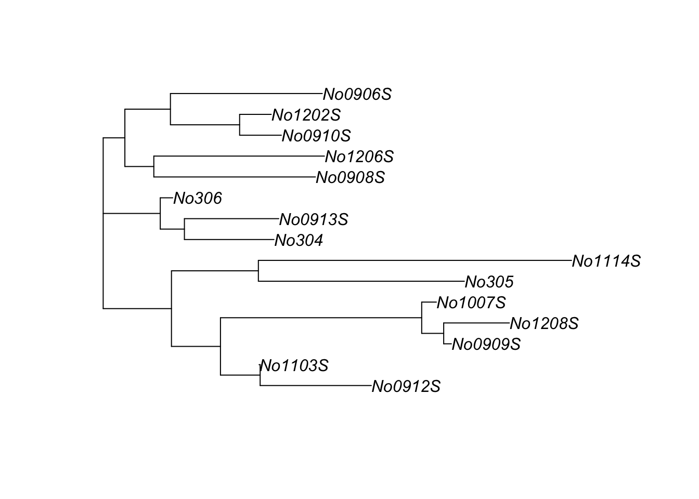

Chapter 20 Phylogenetic tree example using neighbor joining
20.1 Key vocab / concepts (not exhaustive)
neighbor joining, msa, distance matrix, redundancy in distance matrices, diagonal of matrix, upper/lower triangular portion of matrix, symmetric matrix, phylogenetic tree, unrooted tree, branches, branch lengths, nodes
Phylogenetic trees can be built several ways. Almost all methods using macromolecular sequences (DNA, protein, RNA) require first creating a MSA. Some methods then use algorithms that work directly with the MSA. A faster way is to summarize the MSA as a distance matrix by calculating the genetic distance between each pair of sequences in the MSA. This produces a genetic distance matrix. There are several ways to calculate genetic distance, but the simplest is to count the number of bases that are different between two sequences that are of equal length or to use 1-PID.
The ape packages has a popular distance-based tree building method called neighbor joining (nj). This is a common method; for example, it can be used via the BLAST website.
First, download ape from cran if needed. I’ve commented this out because I have already done this.
# install.packages("ape")Now load it into my current R sessions
library(ape)I can always learn about an R function be going to the help file. Help files often include at the bottom. These vary in quality, but good ones use simple datasets to illustrate the basic operation of functions in a package.
If you go to the nj help file
?njand scroll to the bottom you’ll see a classic example from paper that introduce the nj algorithm, Saitou and Nei (1987).
In this example, we’ll make a simple 8 x 8 distance matrix where each value is the number of bases that are different between two sequences.
The data first go in a vector
x <- c(7, 8, 11, 13, 16, 13, 17, 5, 8, 10, 13,
10, 14, 5, 7, 10, 7, 11, 8, 11, 8, 12,
5, 6, 10, 9, 13, 8)Note that even though we’re going to make an 8 x 8 matrix, which will have 64 elements, we only have 28 elements in our vector. See if you can predict why this is.
length(x)## [1] 28We’ll then make an 8 x 8 matrix M using the matrix() function. (Don’t worry about the exact arguments being used here)
M <- matrix(0, 8, 8)
M## [,1] [,2] [,3] [,4] [,5] [,6] [,7] [,8]
## [1,] 0 0 0 0 0 0 0 0
## [2,] 0 0 0 0 0 0 0 0
## [3,] 0 0 0 0 0 0 0 0
## [4,] 0 0 0 0 0 0 0 0
## [5,] 0 0 0 0 0 0 0 0
## [6,] 0 0 0 0 0 0 0 0
## [7,] 0 0 0 0 0 0 0 0
## [8,] 0 0 0 0 0 0 0 0Now we’ll make the matrix (close eyes and run code)
M[lower.tri(M)] <- x
M <- t(M)
M[lower.tri(M)] <- x
dimnames(M) <- list(1:8, 1:8)Now we have an 8 x 8 matrix filled in
M## 1 2 3 4 5 6 7 8
## 1 0 7 8 11 13 16 13 17
## 2 7 0 5 8 10 13 10 14
## 3 8 5 0 5 7 10 7 11
## 4 11 8 5 0 8 11 8 12
## 5 13 10 7 8 0 5 6 10
## 6 16 13 10 11 5 0 9 13
## 7 13 10 7 8 6 9 0 8
## 8 17 14 11 12 10 13 8 0You can see that the diagonal is all 0, and that the matrix is symmetric. There were only 28 elements in our vector because the same values appear in both the upper triangular portion of the matrix and in the lower triangular portion. So, 28 elements, used in two places, plus 8 zeros for the diagonal:
2*28 + 8## [1] 64In this case the zeros are data: 1 sequences compared to itself has a distance of 0. In many cases, the redundancies of a matrix will be dropped. For example, the diagonal left blank, one of the two triangular portions dropped (doesn’t matter which one), and even the first column dropped because its 0.
Now, we can make the actual tree. nj() is a simple function that takes on a single arguments, a distance matrix
tr <- ape::nj(M)The plot command visualizes the tree for us
plot(tr, type = "u")
plot(tr, type = "unrooted")
This is an unrooted tree because no outgroup (distantly related comparison group that diverged long ago) was defined. Unrooted trees are common in practice, but usually trees in textbooks are rooted. The lengths of the branches correlate with the number of differences between each pair of sequences. Two branches meet at a node.
The nj help file also has another example based on data from mice that comes from the ape package.
We can learn more about the data using ?woodmouse
This tells us that this is data from the mitochondrial gene cytochrome b, a gene that occurs in all mitochondria and hence all eukaryotes (but not archea or bacteria).
We load these data using the data() command
data(woodmouse)We can see what it is using is() and class() and other function
is(woodmouse)## [1] "DNAbin"class(woodmouse)## [1] "DNAbin"dim(woodmouse)## [1] 15 965Note that its a specialized data object called “DNAbin” and not in a simple matrix format. I can learn about DNAbin objects from their help file. This help file also has some example code at the bottom, but its pretty dense. I was able to fish out a handy function called dist.dna() which let’s me better see what’s in the woodmouse object.
dist.dna(woodmouse)There are 15 samples and the matrix is big. I can make it easier to see by using the round() function wrapped around dist.dna()
round(dist.dna(woodmouse), digits = 2)## No305 No304 No306 No0906S No0908S No0909S No0910S No0912S No0913S
## No304 0.01
## No306 0.01 0.00
## No0906S 0.02 0.01 0.01
## No0908S 0.02 0.01 0.01 0.01
## No0909S 0.02 0.02 0.01 0.02 0.02
## No0910S 0.02 0.01 0.01 0.01 0.01 0.02
## No0912S 0.01 0.01 0.01 0.01 0.01 0.01 0.01
## No0913S 0.02 0.01 0.00 0.01 0.01 0.02 0.01 0.01
## No1103S 0.01 0.01 0.01 0.01 0.01 0.01 0.01 0.00 0.01
## No1007S 0.02 0.02 0.01 0.02 0.02 0.00 0.02 0.01 0.02
## No1114S 0.02 0.02 0.02 0.02 0.02 0.02 0.02 0.02 0.02
## No1202S 0.02 0.01 0.01 0.01 0.01 0.02 0.00 0.01 0.01
## No1206S 0.02 0.01 0.01 0.01 0.01 0.02 0.01 0.01 0.01
## No1208S 0.02 0.02 0.01 0.02 0.02 0.00 0.02 0.01 0.02
## No1103S No1007S No1114S No1202S No1206S
## No304
## No306
## No0906S
## No0908S
## No0909S
## No0910S
## No0912S
## No0913S
## No1103S
## No1007S 0.01
## No1114S 0.02 0.02
## No1202S 0.01 0.01 0.02
## No1206S 0.01 0.02 0.02 0.01
## No1208S 0.01 0.00 0.02 0.02 0.02Its still a big matrix, so you may need to move your RStudio panes around a bit to see it all.
Note that in this case, the lower triangular portion of the matrix is shown, the upper part and diagonal is omitted, and the first row is dropped: the first row is No304, while the first column is No305 (followed by column 2, No304).
In order to build the tree we have to turn the DNAbin object into this matrix. The most transparent way to do this is like this
mouse_M <- dist.dna(woodmouse)Then build the tree with nj()
trw <- nj(mouse_M)We can do it in a single step, though, if we wrap the nj() function around dist.dna()
trw <- nj(dist.dna(woodmouse))We can then visualize it using plot()
plot(trw)